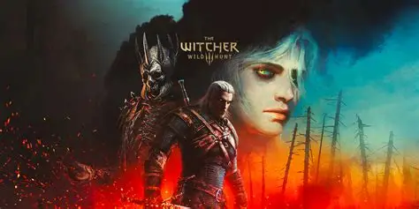
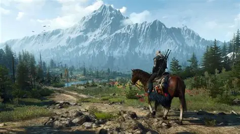
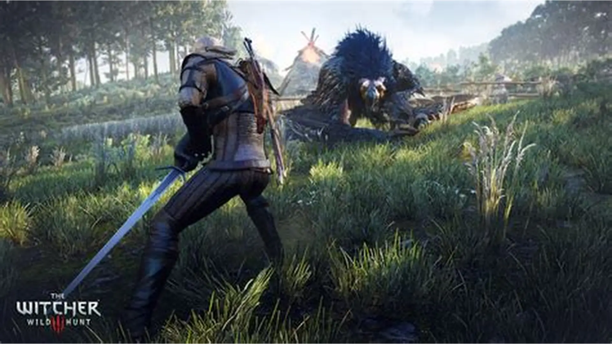

The wither

Wild Hunt é um aclamado RPG de ação e mundo aberto lançado em 2015 pela desenvolvedora polonesa CD Projekt RED. Considerado um dos marcos da história dos videogames, o jogo acompanha a jornada de Geralt de Rívia, um mutante caçador de monstros profissional — conhecido como bruxo — em um vasto universo de fantasia sombria inspirado no folclore eslavo.A trama principal gira em torno da busca de Geralt por sua filha adotiva, Ciri, uma jovem dotada de poderes ancestrais que controlam o tempo e o espaço. Ela está sendo caçada pela Caçada Selvagem (Wild Hunt), um exército de cavaleiros espectrais de outra dimensão que deseja usar seus poderes para fins catastróficos.

